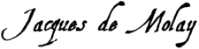
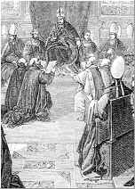

|  |
From 1307 to 1314
[October 13, 1311] [April 3, 1312]
 At the procedure's beginning, 36 Templars had been tortured to death in Paris. Philip the Fair used every means possible to damage the Temple Order in the court of public opinion. The Pope, believing his own authority threatened by the king's agents, first argued in favor of the Knights. Philip soon managed to calm the pontiff's misgivings. The theology faculty applauded the king's actions, and an assembly was convened in Tours (March 24, 1308) on behalf of the French people demanding punishment of the accused, and declaring to the king that the Pope's intervention was not required to punish notoriously guilty heretics.
At the procedure's beginning, 36 Templars had been tortured to death in Paris. Philip the Fair used every means possible to damage the Temple Order in the court of public opinion. The Pope, believing his own authority threatened by the king's agents, first argued in favor of the Knights. Philip soon managed to calm the pontiff's misgivings. The theology faculty applauded the king's actions, and an assembly was convened in Tours (March 24, 1308) on behalf of the French people demanding punishment of the accused, and declaring to the king that the Pope's intervention was not required to punish notoriously guilty heretics.
Jacques de Molay had been sent with other Order leaders to appear before the Pope to explain himself, but his trip was stopped in Chinon, where cardinals had arrived to interrogate him. Historians believe that Philip had procured the papal tiara for Clement V on various conditions, one of which being the abolition of the Templar Order. Initial evidence suggests a great number of Templars made the expected confessions, and it is generally believed the Grand Master himself gave in, like they did, either out of fear of torture and death, or in the hope he could obtain favorable consideration for the Order if he ceased resisting the king's political plans.
The Pope, however, obliged to lend a judicial appearance to the violent methods aimed at the Order's destruction, convened in 1308 an ecumenical council in Vienna for 1310 (it finally opened in 1311), and set up a commission in Paris to gather necessary and even vital information against the Order to prompt the council's verdict. The bull ordered the Templars to appear before the council through the ministry of their defenders.
Jacques de Molay was brought before the papal commissioners and the charges against him were read in the vulgar tongue. When he heard apostolic letters alleging he had made certain confessions in Chinon, he expressed his astonishment and indignation against this assertion.
A large number of Templars followed their leader and appeared before the council. The affair began to take on an unusually heavy quality; the Knights proved worthy of the Order, themselves and the great families to which they had the honor to belong. The majority of them, who had earlier been forced to confess to their inquisitors through torture or fear, recanted their testimony before the papal commissioners. They complained loudly of cruelties imposed upon them, and declared in vigorous terms their desire to the defend the Order to their deaths, body and soul, before and against everyone, every living man, except for the Pope and king.
The Grand Master repeatedly demanded he be brought before the Pope and judged by him alone. Five hundred forty-six Templars, including those who had confessed and those who still resisted their oppressors' methods, stood in defense of the Order. Soon other Knights held in prisons throughout France insisted on taking part in this honorable jeopardy, and were transferred accordingly to prisons in the capital. The number of defendants now reached around 900. It was easy to defend the Order and, when they began doing so with a success that discomfited the king and his agents, the king devised a response as cruel as it was quick: to hand over to the Inquisition those knights who, having retracted their earlier confessions, upheld the Order's innocence.
The trials of the Templars seemed headed in the right direction around the spring of 1310. In Paris, the Order found a legion of defenders represented by reputable attorneys. For those wishing to suppress the truth, the time to act was now. And act they did: they had never dream up a more shocking solution than the one they resorted to. They took advantage of the fact that the trials against the Order and against the individuals ran concurrently, and from the fact that the judges in the trial against the individuals in Paris were totally devoted to them, to strike mortal fear into the hearts of witnesses against the Order. By papal decision, judgment of the individuals in the Paris diocese belonged to the provincial council, presided over by the Archbishop of Sens, metropolitan Paris.
The Archbishop of Sens, it turns out, was the brother of one of the king's top ministers, Enguerrand de Marigny. He convened in Paris his province's council. This Inquisition tribunal had the right to rule without hearing the accused and to execute immediate arrest warrants. The prisoners' attorneys understood the terrible threat implied by this assembly's sudden convocation. They acknowledged as such to the papal commission on May 10, 1310. But the head of the commission, the Archbishop of Narbonne, withdrew upon being informed of the planned treachery, stating "he had to hear or celebrate mass." The other commissioners could only reply: "We pity you with all our hearts, but the Archbishop of Sens takes action against individuals on a regular basis; our hands are tied."
Those who persisted in retracting their confessions were declared relapsed heretics, handed over to secular justice and condemned to burning at the stake. Those who did not confess and refused to do so were condemned to life in prison as unreconciled Knights. Those who did not recant their confessions to the impieties and turpitudes ascribed to the Order were freed, received absolution and were called reconciled Templars. The time taken to accuse, interrogate and judge the alleged relapsed heretics, condemn them to the stake and carry out this punishment lasted only from Monday, May 11 to the following morning. Fifty-four Knights died in Paris that day. Condemned as relapsed by the Archbishop of Sens and his suffragans, they were herded into carts and publicly burned to death between Vincennes forest and the Paris windmill, outside the Saint-Antoine gate.
Records indicate the names of several of the knights who endured this honorable torture. They included Gaucerand de Buris, Guido de Nici, Martin de Nici, Gaultier de Bullens, Jacques de Sansy, Henry d'Anglesy, Laurent de Beaune and Raoul de Fremi. Every historian who has written about the torture of the Templar Knights has attested to the great bravery they demonstrated up until their deaths: singing hymns while braving the torments with chivalric courage and religious resignation, they proved themselves worthy of the pity of their fellows and the admiration of posterity. "They suffered," wrote one chronicler of the time, "with a constancy that placed their souls in grave peril of damnation, for it led ignorant people to believe they were innocent."
The die was cast: it was no longer possible to entertain the slightest pretension to freedom for the defense. Two of the four chosen attorneys had disappeared. The commission did nothing to cover up the ironic comedy of the sessions it held on the 13th in Saint-Eloi Chapel. Yet something had changed since the previous day. The testimony of the first witness presented that day was moving. He was a Knight from the diocese of Langres, Aimery de Villiers-le-Duc, about 50 years old and a Templar for 28 years. As the charges against him were read, he interrupted, "pale and terrified," protesting that if he was lying, he hoped to die then and there and go straight to hell; he beat his chest with his fists, raised his arms toward the altar and set his knees to the ground. "I confessed," he declared, "to several charges because of the torture inflected upon me by Guillaume de Marcilly and Hugues de La Celle, knights of the king, but it is all untrue. Yesterday I saw 54 of my brothers being carted off to the stake because they refused to confess to our supposed crimes; I thought that I myself would be unable to resist the terror of the flames. I would swear to everything, I know it; I would swear I'd killed God if they wanted me to."
And he begged the commissioners and scriveners to repeat what he had told his guards for fear of being burned himself. This tragic deposition made such an impression on the Pope's representatives that they issued a temporary stay of execution. They resumed operations, fictional from that point on, only after an interruption of six months, and only as a formality.
Those who testified beginning December 1310 were all Templars reconciled by provincial synods, that is, submissive ones who appeared "without robe and beards shaven." When the investigation was finally closed, two copies were shipped to the elders of the future council in Vienna. The report contained 229 pages of compact script.
October 13, 1311 : Opening of the Council of Vienna
T
he council of Vienna, postponed on several occasions, finally took place in October 1311, opening on the 13th of that month, four years to the day of the anniversary of the Templars' arrest across France. Clement V used the months preceding this time to gather an immense arsenal of evidence against those he had judged and condemned in advance. He knew what people were saying throughout the West: "The Templars denied all charges, except those who were under the thumb of the King of France." He had to put an end to these rumors, and for this reason he issued bulls urging the kings of England and Aragon to use torture, despite local customs in their kingdoms forbidding such measures. Orders for torture were also issued at the last moment in Cyprus and Portugal. The spilling of martyred blood took place on this occasion as well. We hear of the torture inflicted in August and September 1311 by the Bishop of Nimes and the Archbishop of Pisa; these prelates sent the Pope only depositions agreeable to him; they omitted all testimony made by holdouts.
Guillaume Le Maire, Bishop of Angers, summoned before the ecumenical council in Vienna, like all Christian prelates, wrote up his "opinion" in the following terms: "There are," the Bishop wrote, "two views on the subject of the Templars. Some call for the immediate destruction of the Order because of the scandal it has aroused in Christendom and the 2,000 witnesses who attest to its crimes; the others say we must allow the Order to present its defense, because it is wrong to cut off an organ of the Church without prior debate. Well, I believe on my part that our lord the Pope, in light of his full powers, should suppress by virtue of his office an Order which has, to the extent of its abilities, placed a foul stench upon the Christian name before unbelievers and caused the faithful to waver in the steadiness of their faith." Guillaume Le Maire had earned his see. But suppose a bishop of less royalist zeal had wanted to shed honest light at the beginning of the trial? This is how the question of the Temple's guilt would have been posed in his mind.
Over the course of the reading of the charges against the Order, nine Knights appeared and offered to defend the accused Order. The august assembly was expecting this final act of fairness, interest or pity, but the Pope had them put in chains. The Order was prevented from being defended by these worthy intermediaries, although members of the council were of a mind to hear them. Clement V boasted of this action in a November 11, 1311 letter addressed to the king. The session ended quickly and without further incident.
The Order of the Temple was accused of being thoroughly corrupted by unholy superstitions. According to the pontifical forms of inquiry which fell under 127 separate headings, the Order was charged most notably with hazing new recruits upon joining with a series of insults against the crucifix, obscene kissing and the authorization of sodomy. Celebrating mass, the priests allegedly failed to consecrate hosts; they allegedly doubted the powers of the sacraments.
Ultimately, the Tempars were accused of worshipping a false idol (in the form of a human head) or a cat; they were accused of wearing day and night cords on their shirts bewitched through contact with the idol. These were the major accusations. There were others: the Grand Master and other officers of the Order, though they were not priests, allegedly believed they had the right to absolve their brothers of their sins; their possessions had been wrongly acquired; their alms wrongly made. The indictment presented all such crimes as having been ordered by a secret Templar bylaw.
It went without saying that Philip the Fair's officers executed harsh searches of the "Temples" throughout France with the aim of finding compromising evidence. To wit: copies of the secret "bylaws," idols, heretical books. Records of the actual inventory reveal it contained only holy works and account books: everywhere, only copies of Saint Bernard's irreproachable bylaws. In Paris, however, Guillaume Pidoye, administrator of the seized possessions, presented commissioners of the Inquisition "a silver-plated head of a woman enclosing skull fragments wrapped in a piece of cloth."
This was a reliquary like those found among the majority of ecclesiastical treasures of the 13th century; it was certainly brought out on holy days for veneration by the Templars, and it is not impossible Knights had placed cords or scapulars upon it to sanctify them as a primitive act of encirclement to symbolize chastity. This was not a matter of idols or idolatry, however, as the faithful even today touch relics with their rosaries without coming across as idolaters.
The investigation therefore produced no material document or "silent witness" against the Order. All evidence relied on oral testimony. But the accusatory depositions, however numerous they might have been, lose all value if it is taken into consideration that they were the result of Inquisitorial procedure. As Aimery de Villiers-le-Duc put it best, "I would swear I'd killed God if they wanted me to." The alleged facts should be examined from the point of view of common sense.
If the Templars had truly practiced the rites and superstitions attributed to them, they would have been sectarian, meaning, as in all heterodox communities, there would have been enthusiasts among them who confirmed their faith by demanding to participate in the mystic joys of persecution. However, not a single Templar throughout the entire trial stood up for the so-called crimes of the alleged cult. Every Templar who confessed to denials and idolatry was absolved.
What a surprise that the heretical doctrine of the Temple did not result in even a single martyr! The hundreds of Knights and brothers-in-arms who died in the agony of prison, at the hands of torturers or at the stake, were not sacrificed for their beliefs; they preferred death to the act of confessing, or having confessed by force, than stick to their confessions. It has been suggested that the Templars were Cathars, but the Cathars, like the ancient Asian Montanists, had a passion for torture; even at the time of Clement V, the "Dolcinists" of Italy found miraculous strength in the repeated and frenzied proclamation of their doctrines. With the Templars there was neither sacred joy nor feeling of triumph before the executioner. They suffered it all in the spirit of negation.
If the Templars had truly engaged in the not simply monstrous but stupid excesses attributed to them, all of them, interrogated one by one and forced to confess, would have described these excesses in the same way. In agreement when speaking about legitimate Order ceremonies, they vary greatly in describing their alleged blasphemous rituals. Michelet, who believed in the Temple's crimes, correctly observed that "their denials are identical, while the confessions all vary in their specifics." He concluded "that the denials were concocted in advance and that the differences in the confessions lent them a special air of truth." But why? If the Templars were innocent, their responses to the same imaginary charges could not have been identical; if they were guilty, their confessions would have been exactly the same.
The lack of credibility of the charges, the ferocity of the investigatory procedures, the contradictory nature of the confessions were surely a source of concern to the judges, even judges of the era. And what hearts would have denied the evidence of torture by the victims' wounds, their proclamations of love for a persecuting Church, those pained cries whose echoes, gathered by the great commissions scriveners, continue to move and persuade! Those who had their reasons for covering up the truth had to seek all means necessary for suppressing, to the end, public debate. The gag that had effectively been placed upon the mouths of the Order's last defenders at the council of Vienna, itself convened to hear them, represents one more argument in the Templars' favor.
The story of the council of Vienna remains unclear. But one suspects scheming by the King of France to force the Pope's hand, and by the Pope to rig the council's verdict. Clement V was inclined to get matters over with; he said, according to an account by Alberico da Rostate: "If the Order cannot be destroyed per viam justitiae, may it be so per viam expedientiae, so our dear son, the King of France, may be shielded from scandal." But he did not feel he controlled the 300 assembled priests. He trusted only the French bishops; those of Germany, Aragon, Castile and Italy, who had almost uniformly acquitted the Templars in their diocesan districts, were inclined to call for an official debate.
Adding insult to injury, Clement V had to resort to imprisoning the nine Temple Knights who had unknowingly appeared in Vienna, along with fugitive Templar representatives who had been wandering in the mountains near Lyon. This resulted in a second suppression of the defense, in violation of the law. Foreign prelates were outraged. In the circles of Philip the Fair, it was understood that he would have to resort to force. From Lyon, where he was keeping tabs on the council, and where he had summoned a new assembly of prelates, nobles and communities of the kingdom "for the defense of the Catholic faith," the king headed to Vienna (March 1312) with an army. He took his seat beside the Pope. The latter, strengthened, pushed to have read before the priests a bull he had concocted in conjunction with royal counselors.
April 3, 1312 : Suppression of the Order of the Temple
[Top of Page] [October 13, 1311]
 I
I
t was the Vox in Excelso bull of April 3, 1312, in which the Pope admitted there existed nothing against the Order to justify canonical condemnation. He considered the Order no less dishonored, however, as it had behaved execrably before the King of France, as no one had "wanted" to take up its defense, as its possessions were and would be more and more depleted to the detriment of the Holy Land throughout a trial with no end in sight…in other words, a temporary solution was needed.
He therefore suppressed the Order of the Temple not by means of "definitive sentence" but by temporary means or apostolic rule "with the blessing of the Holy Council." Thus the Temple Order was brought to an end, suppressed but not condemned, bled white without a fight.
The actions of the Council of Vienna were removed in time, and the bull provisionally suppressing the Order of the Temple was not printed for the first time until 1606. In his bull Considerantes, published only four days after the bull of abolition, the Pope declared that the totality of information gathered against the Order and the Knights did not offer sufficient proof to find them guilty, but only cast suspicion on them. Clement XIV later resorted to this same approach when he prevailed in the abolition of the Order of the Jesuits: in his July 31, 1773 brief, he wrote: "Pope Clement V suppressed and utterly extinguished the military Order of the Templars due to their poor reputation, despite their having been legitimately confirmed, despite their having rendered services on behalf of the Christian republic so stellar that the holy apostolic see had amassed wealth, privileges, powers, exemptions and permissions, and despite the fact that the Council of Vienna, to which the pontiff had conferred the matter, had been advised to abstain from rendering a formal and definitive verdict."
The Templars of France were not even tempted to resort to arms. Is this not one more piece of evidence of these men's submission that people today, in order to fully exonerate a defendant denied justice, freely make the accusation of the formation of a state-within-the-state and placing the oneness of the French monarchy in danger? The Vox in Excelso bull left two tough questions unanswered: the fate of the Templar prisoners, and the fate of the suppressed Temple's wealth.
The Temple's possessions had already begun disappearing during the trial despite administrators' vigilance. The appetite of princes had been piqued by the affair to the point that several of them entertained notions of bringing the same fate to the Hospitalers and the Porteglaive Knights. The Teutonic order was accused of heresy in 1307 by the Archbishop of Riga. The despoiling greed of the Protector Princes of the Reformation had already begun to show itself. After the Council of Vienna proceeded methodic carving up of the prey. In theory, all the Order's property was to be transferred to the Holy See, which would offer them to the Hospitalers, but this fictive transfer did not prevent the crown from keeping the lion's share. First, the king's debts owed to the Order were erased, for the canons prohibit repaying debts to heretics.
Moreover, the king seized the all the cash held within the Temple's banks. He went even further when the Templars' spoils were officially promised to the Hospitalers: he claimed that his earlier accounts with the Temple had not been settled, and the Order continued to owe considerable sums whose amount was too large to calculate precisely. The Hospitalers, who had taken over the rights and duties of the Temple, were obliged for this reason to agree to a transaction: they paid 200,000 Tournoise pounds on March 21, 1313, and this sacrifice did not even settle the crown's accounts, as they continued asking for more until the time of Philip the Tall. As for real assets, Philip the Fair quietly received revenues until his death, with the Hospitalers later having to indemnify the crown for funds it had disbursed while sustaining imprisoned Templars between 1307 and 1312: costs for jailing and torture. It appeared true, in sum, that the Hospitalers grew poorer rather than richer from the gift made to their Order.
There was still the question of the prisoners. It seemed that after the Order was abolished, the persecution of the Knights came to an end. Those who willingly underwent the humiliation of confession were set free. Among those freed, some roamed about, some tried earning a living through manual labor, while others entered monasteries and others still married, disgusted by the calling. The impenitent and relapsed were punished under Inquisitorial law. The most famous of these final-hour relapsed were two high dignitaries for whom the Pope reserved his personal judgment: Jacques de Molay an the Preceptor of Normandy. The initial confession of the Grand Master and the long persecution he endured led to the hope that, beaten down by misfortune, he would reconfess to the Order's crimes and thereby vindicate the rigors exacted by the justice of the king.
The Grand Master of the Order of the Temple continued to call for his judgment, which the Pope had promised to issue personally. However, the pontiff, fearing the Grand Master's presence, instead called upon three commissioners to judge him in Paris, along with three other Order leaders. It was thus only on December 22, 1312 that Clement V, in concert with Philip the Fair, appointed three French cardinals, his nephew Arnaud de Farges, Citeaux monk Arnaud Novelli and friar Nicolas de Freminville, to try the high leaders – Cardinals who, not long ago, had abandoned their own brothers to save themselves. They were ordered to hear de Molay's final deposition and those of the three leaders held with him, who included Geoffroy de Charnay. What did they want with them? To acknowledge the justice of the double condemnation based upon the truth of the accusations leveled against the Templar Order and in accordance with the massive testimony already gathered by the tribunals. For the two sovereigns, this was a stunning, and entirely expected victory.
 |